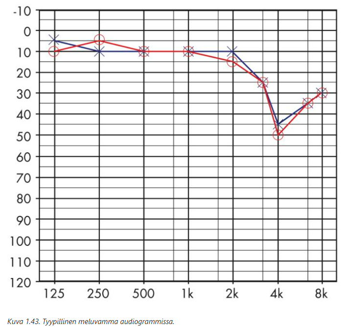
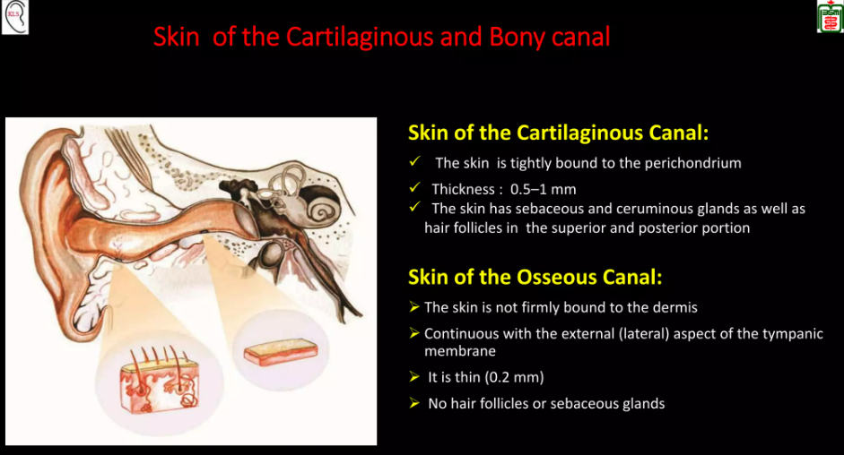
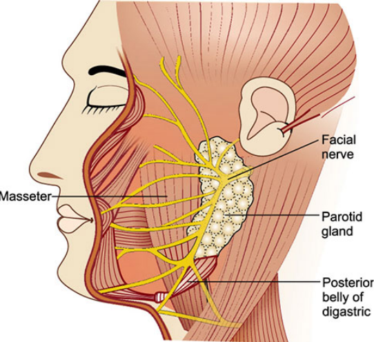
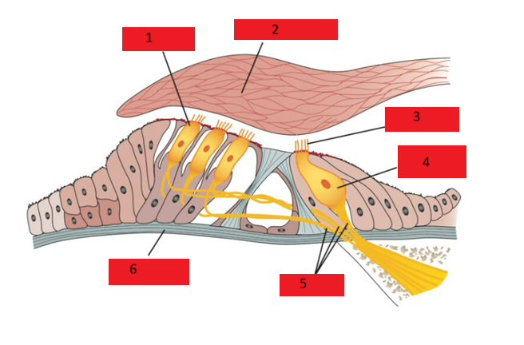
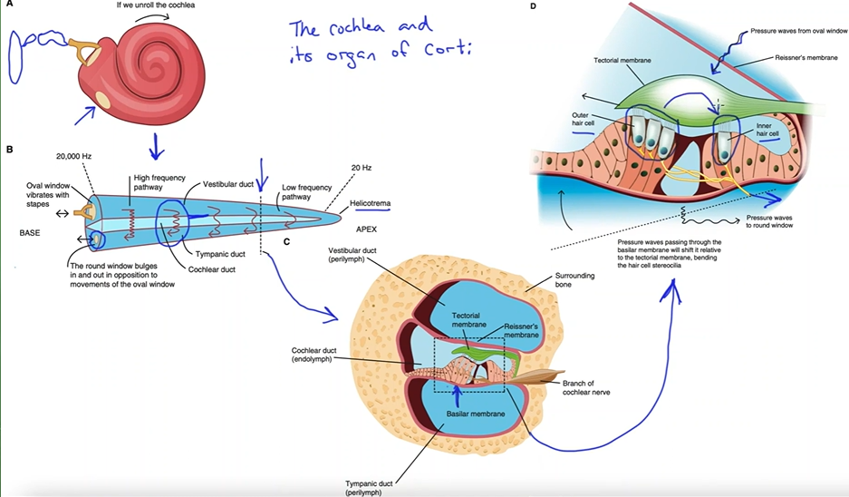
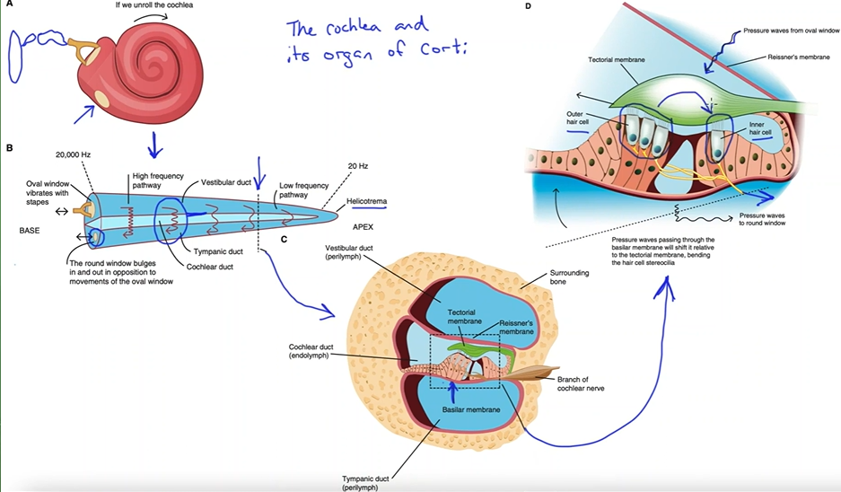
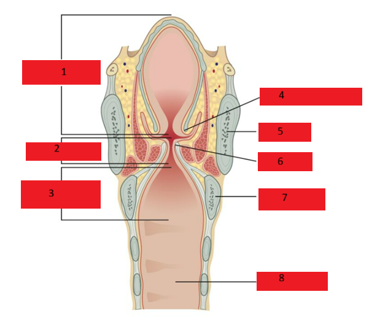
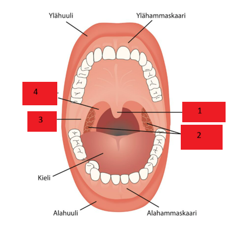
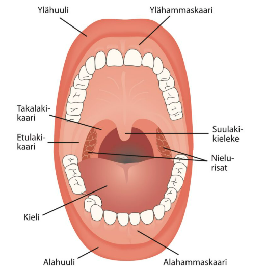

Kappale 3 Sisäänpääsy 2021 (Invictus)
2016-tärpit olleet ilmeisesti käytössä, mutta niiden lisäksi myös uusia kysymyksiä jonkin verran. Tässä nyt vain uudet. Periaate on sama kuin aikaisemmissa eli vastaa, onko väittämä oikein vai väärin. Lopussa on kylläkin muutama poikkeuksellinen kysymys, joissa vaaditaan ihan sanallista vastausta eikä vain O/V. Lopussa myös muutamia kuvantunnistustehtäviä.
3.1 Kielen tyven ja kurkunpään yhtymiskohta fossa morgagni
Solution.
VFossa morgagni (ventriculus laryngis) tarkoittaa ääni- ja taskuhuulten väliin jäävää pientä poukamaa

3.2 Ilmajohtomittauksessa 125-8000 hertziä
Solution.
OLuujohtotutkimuksessa tutkitaan kuulokynnykset taas 0,25–4 kHz:n taajuusalueilla.
Ilmajohtotutkimuksessa kuulokkeiden keskikohta on asetettava tarkkaan korvakäytävien kohdille. Tällöin äänet etenevät suoraan ilman heijastuksia korvakäytävään ja tärykalvolle sekä edelleen välikorvaan ja sisäkorvaan. Mikäli korvakäytävän suu on kapea ja pyrkii painumaan kuulokkeiden alla kasaan, tutkimuksen aikana voidaan käyttää korvakäytävän suuta auki pitävää holkkia.
Ensin tutkitaan 1 kHz:n kuulokynnys. Sen jälkeen tutkitaan suurempien taajuuksien kuulokynnykset, kontrolloidaan 1 kHz:n kuulokynnys ja jatketaan pienten taajuuksien tutkimisella.3.3 Vestibulaarisessa elimessä aistitaan pään kiertoliikettä kaarikäytävissä
Solution.
OSisäkorvan tasapainoelin eli vestibulaarinen elin muodostuu kolmesta kulmakiihtyvyyttä ja pään kiertoliikettä aistivasta kaarikäytävästä ja kahdesta pään asentoa ja suoraviivaista kiihtyvyyttä aistivasta pääte-elimestä, utriculuksesta ja sacculuksesta.
Kaarikäytävät ovat likimain kohtisuorassa toisiaan vasten. Kullakin kaarikäytävällä on vastinpari samassa tasossa toisessa korvassa. Tämän vuoksi esimerkiksi vaakasuoran kaarikäytävän suuntainen kiertoliike vasemmalle kiihdyttää vasemman puolen vaakasuoran kaarikäytävän toimintaa, kun taas samanaikaisesti oikean puolen vaakasuoran kaarikäytävän toiminta vähenee. Perifeerinen hermotoiminta yhdistetään aivorungossa ja johdetaan silmien motoneuroneihin. Seurauksena on silmien kiertyminen vaakasuorassa tasossa kompensatorisesti oikealle.

3.4 Keuhkosyöpä voi aiheuttaa äänihuulihalvauksen
Solution.
OKurkunpää saa hermotuksensa n.vaguksen kautta. N. vaguksesta haarautuu n. laryngeus superior ja n. recurrens. Kurkunpään sisäiset lihakset saavat hermotuksensa n. recurrensin kautta, paitsi m. cricothyreoideus, jonka hermotus tulee n. laryngeus superiorin kautta.
N. recurrens kulkee molemmin puolin kaulavaltimon rungon vieressä ja kiertää oikealta a. subclavian alta kurkunpäähän. Vasemmalla puolella n. recurrens kiertää aortankaaren. Tämän vuoksi välikarsinan ja keuhkon kasvaimissa ensioireena voi olla äänihuulihalvauksen aiheuttama äänen käheys johtuen n. recurrensiksen vaurioitumisesta.


3.5 Otsaontelot alkavat kehittyä vasta kouluiässä
Solution.
O3.6 Kasvohermohalvaus voi kehittyä otiitin seurauksena
Solution.
OVälikorvatulehdus paranee yleensä hyvin. Kuitenkin se voi joskus aiheuttaa vakavia, jopa hengenvaarallisia komplikaatioita. Nämä voivat olla intratemporaalisia (äkillinen kartiolisäkkeen tulehdus, kasvohermohalvaus, sisäkorvatulehdus) tai intrakraniaalisia (sinustromboflebiitti, märkäinen aivokalvontulehdus, aivopaise). Erittäin tärkeää on, että nämä harvinaiset komplikaatiot tunnistetaan ajoissa ja hoidetaan viivytyksettä.
Kasvohermohalvaus voi syntyä sekä akuutin että kroonisen välikorvatulehduksen tai helmiäisen komplikaationa. Äkillisen välikorvatulehduksen aiheuttaman kasvohermohalvauksen taustalla on usein hermokanavan synnynnäinen luupuutos. Silloin kasvohermon suojana on vain välikorvan limakalvo. Potilas on lähetettävä päivystyksenä KNK-yksikköön.
Hoito on laaja parasenteesi tai tympanostomia sekä aluksi laskimoon annettava antibioottihoito. Hermon turvotusta pyritään vähentämään suun kautta otettavalla steroidilääkityksellä. Infektion rauhoituttua hermon toiminta palautuu normaaliksi yleensä muutamassa viikossa.
Kroonisen välikorvatulehduksen ja korvan helmiäisen yhteydessä tulehdus saattaa syövyttää kasvohermon luukanavaa. Helmiäinen voi myös paineellaan vaurioittaa kasvohermoa. Kiireellinen leikkaushoito hermon toiminnan palauttamiseksi on välttämätöntä. Potilas tulee lähettää päivystystapauksena erikoissairaanhoitoon.3.7 Korvatorvi yhdistää välikorvan ja mastoidaalilokeroston
Solution.
VKorvatorvi (tuba Eustachii) yhdistää välikorvaontelon nenänieluun. Korvatorvella on tärkeä merkitys välikorvaontelon eritteen poistumisessa, sekä välikorvan ja kartiolisäkkeen lokeroston ilmastoinnissa.
Mastoidaalilokerosto on yhteydessä välikorvan yläosaan kapean solan (adituksen) välityksellä.


3.8 Meluvammassa kuulokäyrässä todetaan aluksi kuoppa 4 -6 kHz:n taajuudella
Solution.
VAudiogrammissa todetaan terävä symmetrinen 3-6 kHz:n taajuusalueen kuoppa. “Melukuoppa” syvenee ja laajenee, jos altistuminen jatkuu vuosia. Suurien taajuuksien alueelta kuulon alenema saattaa levitä pienten taajuuksien alueelle. Merkityksellisen meluvamman kehittymiseen kuluu pitkä aika – tavallisesti 20–30 vuotta. Melualtistuksen kokonaan päätyttyä tilanne ei enää etene. Meluvamman merkitys saattaa korostua myöhemmin, kun kuulo iän mukaisesti huononee.
Meluvamma aiheuttaa sensorineuraalisen (aistimistyyppisen) kuulovian. Meluvammariski on suhteessa ennen kaikkea melun voimakkuuteen ja altistuksen kestoon. Pitkäaikaisen melun seurauksena sisäkorvan aineenvaihdunnassa tapahtuu aluksi biokemiallisia muutoksia. Nämä johtavat ääntä aistivien solujen toimintahäiriöön. Mikäli altistus jatkuu tai melun voimakkuus lisääntyy, ilmenee sisäkorvan solutuhoa ja tukirakenteiden vaurioita. Ulkokarvasolut vaurioituvat ennen sisempiä. Altistavan äänen taajuudesta riippumatta nämä muutokset heikentävät kuuloa aluksi 3–6 kHz:n taajuusalueella.
Merkittävän altistuksen rajana pidetään yleisesti 85 dB ekvivalenttimelutasoa eli meluannosta. Ekvivalenttimelutaso määritetään useimmiten 8 tunnin altistuksen mukaan. Melualtistus käytännössä usein vaihtelee. Kahdeksan tunnin ekvivalenttimelutasolla tarkoitetaan sitä melun määrää, joka saataisiin ao. aikana jos melu olisi tasaista.
3.9 Puheen ymmärtäminen hälyssä on tyypillisesti heikentynyttä
Solution.
OikeinVarsinkin ikääntyessä. Tyypillinen ikäkuulopotilas kertoo kuulevansa, mutta puheesta on vaikea saada selvää ja puheen ymmärtäminen etenkin hälyssä on ongelma. Kognitiiviset toiminnot vaikuttavat puheen ymmärtämiseen etenkin hälyssä.
Puheentunnistukseen liittyvät vaikeudet ikäkuulopotilailla johtuvat kuulokynnysten heikkenemisen lisäksi vaikeuksista erottaa äänisignaalin aika-, taajuus- ja intensiteettieroja.
Myös suuntakuulovaikeuksia todetaan ja tämä saattaa liittyä heikentyneeseen binauraalikuuloon (kahdella korvalla kuuleminen). Kuuluvuuden tasoittumisesta (recruitment) johtuen ikäkuulopotilas kokee kuuloviasta huolimatta voimakkaat äänet epämiellyttävinä samalla kun hiljaiset äänet jäävät kokonaan kuulumatta tai kuuluvat heikosti.3.10 Joskus kuulon alenemaan liittyy korvien soimista, joka voi olla subjektiivisesti haittaavampaa kuin pieni kuulonalenema
Solution.
O
Tinnitus tarkoittaa potilaan kuulemaa ääntä, joka ei ole peräisin ulkoisesta äänilähteestä eikä se ole tunnistettavaa puhetta tai musiikkia. Tinnitus voi olla objektiivinen, jolloin ulkopuolinenkin voi sen kuulla esimerkiksi korvan seudulta auskultoiden. Objektiivisen tinnituksen taustalla on tavallisimmin vaskulaarinen syy, kuten verisuonimalformaatio tai -stenoosi, joka voidaan todeta magneettiangiografialla. Tavallisimmin kyse on kuitenkin subjektiivisesta tinnituksesta, jonka havaitsee ainoastaan henkilö itse. Ääni kuulostaa tavallisimmin vinkumiselta, soimiselta, suhinalta tai jyrinältä, ja se voi olla jatkuvaa tai ajoittaista.
Korvien soiminen on hyvin tavallista; lähes kaikilla korvat ovat joskus soineet. Täysin hiljaisessa äänieristetyssä tilassa yli 90 % ihmisistä korvat alkavat soida muutaman minuutin jälkeen. Noin 40 %:lla ihmisistä on ollut pidempiaikaista korvien soimista ja jopa 10 %:lla korvat soivat jatkuvasti. Vain muutama prosentti näistä kokee tinnituksen häiritsevänä.
Tavallisimmin tinnitus liittyy sensorineuraaliseen kuulovikaan. Silloin korva tuottaa niitä ääniä, joita se ei ulkopuolelta kuule. Jos tinnitusäänen frekvenssiä mitataan huonokuuloiselta, se usein vastaa sitä taajuutta, jolta kuulo on laskenut. Tinnitus voi liittyä myös purentahäiriöihin ja niskahartiaseudun lihaskireyksiin.3.11 Lasten yleisimpiä infektioita on akuutti korvakäytävätulehdus väärin, välikorvatulehdus
Solution.
VÄkillinen välikorvatulehdus on yksi tavallisimmista lapsuusiän infektioista. Se on yksi yleisimmistä syistä lääkärille hakeutumiseen ja yleisin syy antibioottikuurien määräämiseen lapsille. Välikorvatulehdukset ovat myös tavallisin syy lasten kirurgisille toimenpiteille.
Äkillisen välikorvatulehdusta esiintyy kaikissa ikäryhmissä, mutta sen ilmaantuvuus on suurin 0,5–2 vuoden ikäisillä lapsilla. Vuoden ikään mennessä noin 40 % lapsista, kahden vuoden ikään mennessä noin 70 % ja kolmen vuoden ikään mennessä lähes 85 % lapsista on sairastanut vähintään yhden välikorvatulehduksen. Pieni osa lapsista on erityisen alttiita sairastamaan toistuvia välikorvatulehduksia. Noin 10 % lapsista on sairastanut 3 tai useampia välikorvatulehduksia jo ennen yhden vuoden ikää.3.12 Meluhaitassa ensimmäisenä yleensä alenee matalat äänet väärin, korkeat äänet ensin
Solution.
V3.13 Ääniraurakokeet on parempia kuulon tutkimiseen kuin audiometria
Solution.
VÄänirautakokeita (Weber ja Rinne) käytetään apuna, kun päätellään kuulovian tyyppiä. C5 ääniraudalla voidaan myös tutkia potilaan mahdollista kuulovikaa suurilla taajuuksilla (esim. meluvamma). Äänirauta laitetaan soimaan ja viedään tutkittavan korvan viereen. Mitataan, kuinka pitkään potilas kuulee äänen. Normaalikuuloinen kuule ääniraudan soimisen n. 20 sekunnin ajan hiljaisessa ympäristössä.
Tarkempaan diagnostiikkaan ja kuulovian vaikeusasteen määrittämiseen tarvitaan kuitenkin aina audiometriaa.3.14 Seruminaali- ja talirauhaset sijaitsevat luisessa korvakäytävässä
Solution.
V
Rustoisen korvakäytävän (eli korvakäytävän alkuosan) ihossa sijaitsevat seruminaali- (muuntuneita hikirauhasia) ja talirauhaset. Korvavaha (cerumen), on seruminaali- ja talirauhasten yhteistuote, jonka tehtävänä on muodostaa korvakäytävän ihon pinnalle sitä suojaava kalvo.
3.15 N. facialis on kasvojen tuntohermo
Solution.
VN. trigeminus (CN V) on kasvojen tuntohermo. Se jakautuu kolmeen päähaaraan:
V1 = n. ophtalmicus -> otsaan ja silmien alueelle
V2 = n. maxillaris -> poskiin ja ylähuuleen
V3 = n. mandibularis -> leukaan ja alahuuleen

3.16 N. facialis hermo haarautuu korvasylkirauhasten sisällä
Solution.
OJakaa parotisrauhasen täten ns. pintalohkoon ja syvään lohkoon.
Koska kasvohermo kulkee parotiksen sisällä, niin parotisrauhasen turvotus esim. parotiitissa tai tuumori voi aiheuttaa hermon kompressiota ja siten aiheuttaa perifeerisen kasvohermohalvauksen.
3.17 Immotile cilia altistaa poskiontelotulehduksille
Solution.
O3.18 Anosmia tarkoittaa hajujen yliherkkää aistimista
Solution.
VAnosmia tarkoittaa hajuaistin puuttumista. Hyperosmia taas tarkoittaisi yliherkkää hajuaistia.

3.19 Hajuaistin häviäminen vanhuudessa normaali ilmiö
Solution.
VHuonosti sanoitettu, mutta täydellinen häviäminen ei ole normaalia. Hajuaistin heikentyminen kylläkin on hyvin yleistä ja normaaliakin. Väestöpohjaisten tutkimusten perusteella joka viidennellä henkilöllä on eriasteisia hajuaistin toimintahäiriöitä ja ne ovat tavallisimpia ikääntyneillä.
Hajuaistin häiriöt voivat kuitenkin myös olla merkki monista neurologisista sairauksista, kuten Alzheimerin taudista, joten hajuaistin häviämistä vanhuksella ei voi suoraan kuvailla normaaliksi ilmiöksi.3.20 Lasten nenän väliseinä kokonaan rustoa
Solution.
O3.21 Poikkeuksellinen kysymys: Mitä taajuuksia testataan c5 ääniraudalla?
Solution.
4096 HzC5 ääniraudalla voidaan tutkia potilaan mahdollista kuulovikaa suurilla taajuuksilla (esim. meluvamma). Äänirauta laitetaan soimaan ja viedään tutkittavan korvan viereen. Mitataan, kuinka pitkään potilas kuulee äänen. Normaalikuuloinen kuule ääniraudan soimisen n. 20 sekunnin ajan hiljaisessa ympäristössä.
C1-äänirautaa taas käytetään mm. Weberin ja Rinnen kokeissa. Se soi 256 Hz.3.22 Poikkeuksellinen kysymys: Kerro Kiesselbachin alueen sijainti sanallisesti
Solution.
Nenän väliseinän etuosaKeiesselbachin alueella (a.k.a. Littlen alue tai Kiesselbachin kolmio) sijaitsee Kiesselbachin plexus, joka on nenän septumia ruokkiva anastomoottinen arteriaverkosto. On rikkaan suonistonsa takia tyypillinen sijainti (n. 90%) anteriorisille nenäverenvuodoille.


3.23 Kuvassa oikea tärykalvo. Nimeä rakenteet.

Solution.
AllaTärykalvo erottaa korvakäytävän välikorvaontelosta. Tärykalvo on kiinnittynyt vasaran varteen (manubrium mallei), joka on nähtävissä tärykalvon läpi. Vasaran varren yläpään lyhyestä haarakkeesta (processus brevis) eteen ja taakse lähtevät poimut jakavat tärykalvon sen pääosaan (pars tensa) ja ylhäällä sijaitsevaan pieneen pars flaccidaan eli Shrapnellin kalvoon.
Keskeltä, vasaran varren pään (umbo) kohdalta tärykalvo on noin 2 mm sisempänä kuin reunoiltaan ja noin 2 mm etäisyydellä täryontelon luisesta mediaaliseinämästä (promontorium). Tämä antaa tärykalvolle lievästi suppilomaisen muodon. Pikkulapsilla tärykalvon ja luisen korvakäytävän takaseinän välinen kulma on huomattavasti loivempi kuin aikuisilla. Tautimuutosten paikantamisen helpottamiseksi tärykalvo jaetaan neljänneksiin (etuylä-, etuala-, taka-ala- ja takayläneljännekset)


3.24 Kuvassa on Cortin elin. Tunnista rakenteet.
Solution.
AllaCortin elin on siis sisäkorvan ns. varsinainen kuuloelin.
 

3.25 Kuvassa koronaalinen leike epiglottiksesta. Nimeä alueet (1-3) ja rakenteet (4-8).

Solution.
AllaKurkunpää jaetaan anatomisesti kolmeen osaan; supraglottiseen, glottiseen ja subglottiseen. Tällä jaolla on merkitystä kurkunpään kasvainten diagnostiikassa ja hoidossa. Supraglottiset leviävät kaulan imusolukkeisiin helpommin kurkunpään imusuonituksen takia. Tämän takia supraglottisella kurkunpään karsinoomalla on huonompi ennuste kuin glottisella. Subglottisia kasvaimia löytyy nykyään harvoin.
Supraglottiseen osaan kuuluvat kurkunpään rakenteet äänihuulitasosta ylöspäin epiglottiksen yläreunaan saakka, glottiseen osaan kuuluvat äänihuulet ja niiden alapinta, ja subglottiseen osaan rakenteet äänihuulten alapinnasta sormusruston alareunaan.

3.26 Kuvassa suuontelon rakenteet edestäpäin katsottuna. Nimeä rakenteet.

Solution.
AllaSuu (cavum oris) on ruuansulatuskanavan alkuosa. Se rajoittuu edessä huuliin, hampaisiin, ylä- ja alaleukaluihin. Suun pohjaosan muodostavat kieli, suunpohjan limakalvo ja lihakset. Leuan- ja kielenalussylkirauhasten tiehyet avautuvat kielen alle. Posken limakalvot ja hammaskaaret muodostavat suuontelon sivut. Korvasylkirauhasten tiehyet avautuvat posken limakalvoille.
Suun katto koostuu kovasta (palatum durum) ja pehmeästä (palatum molle) suulaesta. Pehmeä suulaki jatkuu sivuilla etu- ja takalakikaarina. Lisäksi siihen kuuluu takana keskellä suulakikieleke (uvula). Nielun suuntaan suuontelo rajoittuu pehmeään suulakeen, etulakikaariin ja kielen tyveen.
